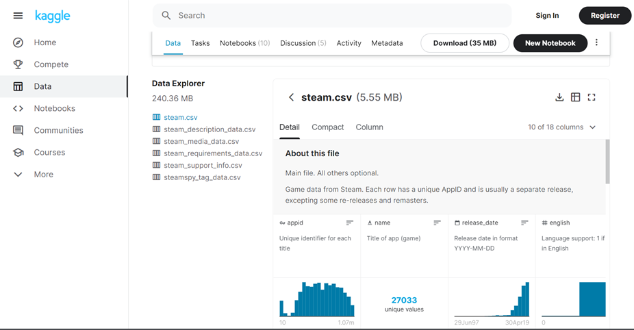
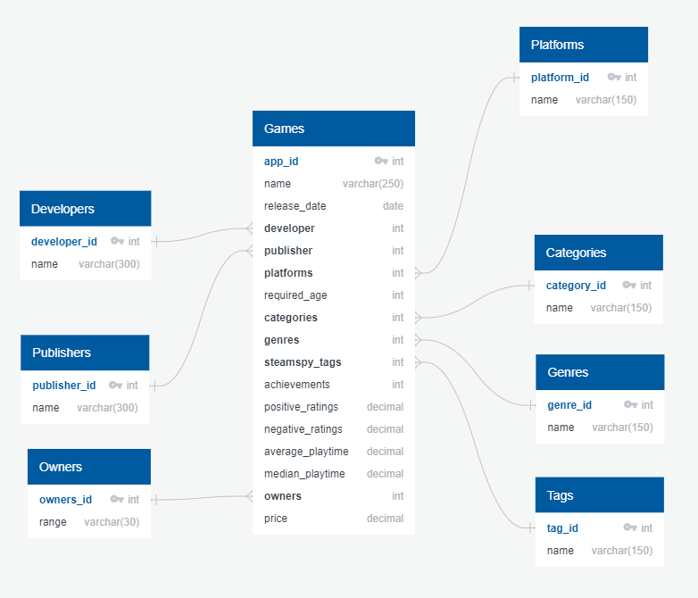

Extract, Transform and Load (ETL)
This project was developed by Beta Team
Introduction

Our source was Kaggle.com, the public site that allows you to find publish data sets.
We choose a Relational Database Model because we have structured data in csv files.
If you want more info about Relational Database Model: click here.
Original Structure
The original structure includes 6 tables with information regarding 27,033 video games, gathered around May 2019 from the Steam Store.
Steam is a video game digital distribution service managed by Valve (an American videogame developer).
Data Modeling

All the team considered as a fundamental initial step to make the Entity Relationship Diagram (ERD). The benefits we can see are:
- We were able to understand better the database
- Number of tables we need for our database (Entities)
- Information such as property and facts you need to describe each table (Atributes)
- How tables are linked togheter (Relationships)